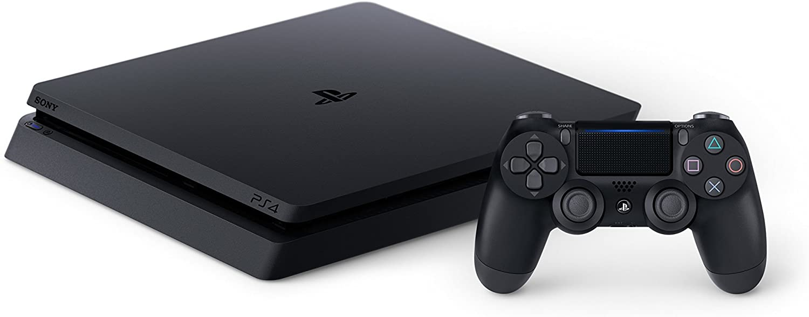

1PlayStation 5

PlayStation 5 incluyen una unidad de estado sólido personalizada para transmisión de datos de alta velocidad para permitir mejoras significativas en el rendimiento del almacenamiento, una GPU AMD capaz de mostrar una resolución de 4K de hasta 120 cuadros por segundo.
Adquierelo por $899.99
2PlayStation 4
la consola cuenta con una Unidad de Procesamiento Acelerado (APU) de AMD construida sobre la arquitectura x86-64. La PlayStation 4 pone un mayor énfasis en la capacidad de jugar juegos fuera de la consola en PlayStation Vita y otros dispositivos compatibles.
Adquierelo por $399.99